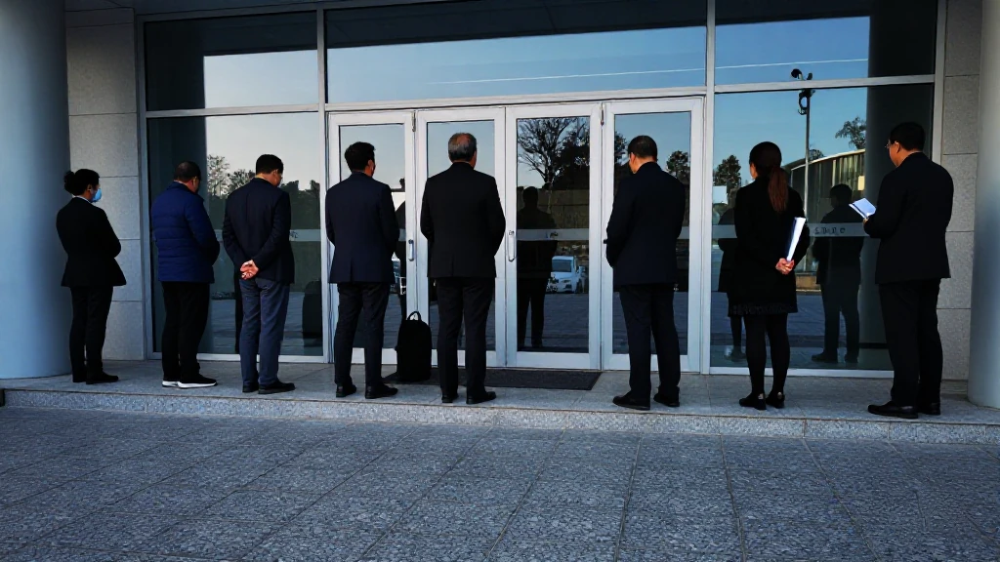
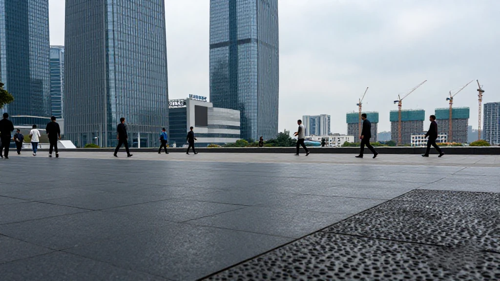
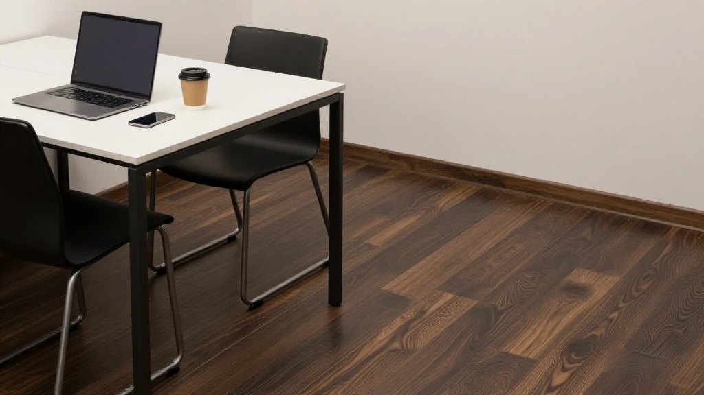
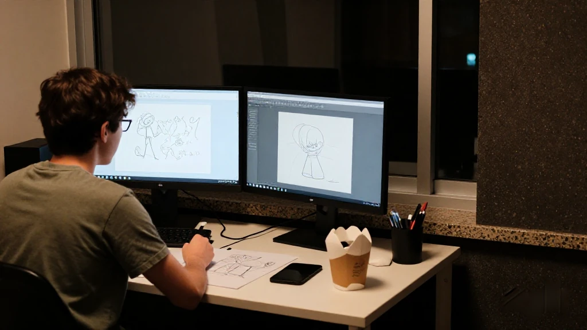

圖片由 AI輔助創作（Z-Image-Turbo）Image by AI (Z-Image-Turbo)
【鄭哥點評】欄目：鄭哥博客點評｜日期：2026-11-10
今日五條，講嘅都係「錢點樣發」。深圳語料券今日十八時截閘，深圳專精特新各區今日要交初審名單，廣州科創貸款十一月十五日截。另外兩條唔係截止日，係方法：海珠用一條賽題養出一間公司，深圳把補貼發到「一個人」身上。
圖片由 AI輔助創作（Z-Image-Turbo）Image by AI (Z-Image-Turbo)
一、廣州科創貸款：研發強度一成，十一月十五日截閘
十一月五日，廣州市科學技術局徵集二〇二六年度科技創新貸款需求，條件三條：註冊在廣州、具備獨立法人資格嘅民營中小微企業；上一年度研發投入強度一成或以上，研發費用亦要一百萬元或以上；領域要落在人工智能、集成電路、低空經濟、腦機接口等新興同未來產業名單之內。
支持分三層：貸款由金融機構自主決策、自擔風險；二〇二六年起新發放嘅合條件科技貸款可享中央財政貼息；再加兩個專項擔保計劃增信。通知寫得好白——納入名單同貸款發放唔直接關聯。申報走 service.most.gov.cn，十一月十五日截。我判斷卡住人嘅係「研發強度一成」：一間營業額一億嘅硬件公司，研發要一千萬才入圍。
來源：廣州市科學技術局《廣州市科學技術局關於組織開展2026年科技創新貸款支持研發投入水平較高民營中小企業融資需求信息徵集工作的通知》，2026年11月5日｜http://kjj.gz.gov.cn/gkmlpt/content/11/11088/post_11088403.html
圖片由 AI輔助創作（Z-Image-Turbo）Image by AI (Z-Image-Turbo)
二、深圳語料券：今日十八時截閘
深圳人工智能語料券今日十八時截閘。補貼分兩頭：透過數據交易所購買非關聯方語料、用作人工智能研發嘅，按採購總費用唔超過三成資助，最高二百萬元；透過市政府數據開放平台開放合規語料嘅，最高獎勵一百萬元。申請企業要在深圳市內實際經營。
市數據管理局同步上線「人工智能語料數據開放專題」，用二〇二五年度資助開放十個數據集、共一點六 TB，覆蓋工業檢測、方言識別、訂單管理。入口有廣東政務服務網（深圳站）、「i深圳」App，或市民中心 B 區綜合窗口。我睇重點唔在二百萬，在「採購」二字：錢唔係派，係補你買數據嗰三成——對做垂直模型嘅細公司，語料係最難開口問價嘅一筆現金。
來源：深圳市政務服務和數據管理局《2026年深圳市人工智能語料券專項資金開始申報！最高可獲200萬元資助》，2026年9月3日｜https://www.sz.gov.cn/cn/xxgk/zfxxgj/bmdt/content/post_12965392.html
圖片由 AI輔助創作（Z-Image-Turbo）Image by AI (Z-Image-Turbo)
三、深圳專精特新：今日市級收表
深圳市中小企業服務局九月十六日發通知，組織二〇二六年專精特新中小企業申報兼覆核二〇二三年存量。企業窗口十月二十日已關；但區一級未做完——各區要初審、實地核查，於今日之前把通過嘅企業推薦上市局。今日截嘅唔係企業，係區。
條件：深圳註冊、獨立法人，而且係有效期內嘅科技型或創新型中小企業；無經營異常、嚴重失信。材料要逐份掃描成 PDF，包括三個年度審計報告同一項以上Ⅰ類知識產權。我成日覺得創業者最常犯嘅錯係跳級——未入創新型就想小巨人，材料一套都唔齊。
來源：深圳市中小企業服務局《深圳市中小企業服務局關於組織開展2026年深圳市專精特新中小企業申報及2023年深圳市專精特新中小企業複覈工作的通知》，2026年9月16日｜https://www.sz.gov.cn/cn/xxgk/zfxxgj/tzgg/content/post_12984011.html

圖片由 AI輔助創作（Z-Image-Turbo）Image by AI (Z-Image-Turbo)
四、海珠琶洲：一條賽題養出一間公司
十一月九日，海珠區投資促進局發文講琶洲：過去四年地區生產總值由二千億上到三千億；今年前三季度落地重點招商項目一百七十七個。琶洲已入全省三大人工智能核心產業集聚區。
最值得睇嘅係路徑。琶洲算法大賽設「天數天算」賽道，把衛星圖像識別、目標監測變成賽題，超過九百支隊伍參賽；出題團隊五月落地琶洲、註冊宇算星河，完成億元級融資，十月首批兩顆算力衛星升空。另一間爍谷科技做音頻克隆，今年十月獲騰訊系投資，此前估值約二億元。我判斷海珠賣嘅唔係補貼，係場景同訂單——呢兩樣，補貼買唔到。
來源：廣州市海珠區投資促進局《海珠：珠水南岸潮正起，琶洲極核勢如虹》，2026年11月9日｜https://www.haizhu.gov.cn/gzhztz/gkmlpt/content/11/11092/post_11092101.html

圖片由 AI輔助創作（Z-Image-Turbo）Image by AI (Z-Image-Turbo)
五、深圳「一人公司」：補貼開始發到個人
深圳市工業和信息化局一月十四日印發人工智能 OPC 創業生態行動計劃：到二〇二七年底，建成超過十家、每家面積唔少於一萬平方米嘅 OPC 社區，培育過千家高成長初創。龍崗「模力谷」同南山「模力營」規劃面積都超過十萬平方米。
錢嘅部分：入庫嘅鯤鵬青年項目最高五萬元獎勵、一百萬元研發資助；留學回國人才最高一百萬元創業資助；畢業五年內創業可申請最高六十萬元個人創業擔保貸款、五百萬元小微企業貸款加貼息。市級另有最高一千萬元「訓力券」、二百萬元「模型券」。最要緊係一句「英雄莫問出處」——淡化學歷，政策由按企業發錢變成按人發錢。
來源：深圳市龍崗區人工智能（機器人）署《致未來OPC創業者，就在龍崗，您與AI的下一次偉大“聯創”》，2026年1月20日｜https://www.lg.gov.cn/bmzz/rgznjqrs/xxgk/qt/gzdt/content/post_12609301.html

圖片由 AI輔助創作（Z-Image-Turbo）Image by AI (Z-Image-Turbo)
六、鄭哥點評
第一，今日真正要動手嘅係三張表。語料券十八時截閘、專精特新今日交名單、廣州科創貸款十五日截。冇一條係風口，但每一條都直接改一間公司今個月嘅現金流。創業資訊唔係睇邊個拿到幾多億，係睇邊張表今日到期。
第二，發錢嘅對象由「企業」變成「人」。海珠用場景養公司，深圳用社區同券補一個人。我判斷未來兩年廣深最活躍嘅創業單位，唔係十人團隊，係一至三個人加一堆模型。
圖片由 AI輔助創作（Z-Image-Turbo）Image by AI (Z-Image-Turbo)
\[Zheng Ge's Take\] Column: Zheng Ge's blog commentary | Date: 2026-11-10
All five items today are about how money gets handed out. Shenzhen's corpus voucher shuts at 18:00 today; every district must hand in its vetted shortlist for the specialised-SME round today; Guangzhou's tech-loan call closes on 15 November with five days left. The other two are not deadlines but methods: Haizhu grew a company out of one contest brief, and Shenzhen now pays its subsidies to a single person.
圖片由 AI輔助創作（Z-Image-Turbo）Image by AI (Z-Image-Turbo)
1. Guangzhou's Tech Loan Call: 10% R&D Intensity, Deadline 15 November
On 5 November the Guangzhou science and technology bureau opened its 2026 call for tech-innovation loan demand, with three conditions: a private SME registered in Guangzhou with independent legal personality; R&D intensity of 10% or above last year, with R&D expense of at least one million yuan; and a field inside the emerging and future industry list, from AI and integrated circuits to low-altitude economy and brain-computer interfaces.
Support comes in three layers: banks decide independently and carry their own risk on the loans; qualifying tech loans newly issued from 2026 get central interest subsidy; and two special guarantee schemes add credit enhancement. The notice says plainly that the list is not directly linked to a loan being granted. Applications run through service.most.gov.cn until 15 November. What stops people, I judge, is the 10% line: a hardware firm with 100 million yuan of revenue needs 10 million in R&D to qualify.
Source: 廣州市科學技術局《廣州市科學技術局關於組織開展2026年科技創新貸款支持研發投入水平較高民營中小企業融資需求信息徵集工作的通知》，2026年11月5日 | http://kjj.gz.gov.cn/gkmlpt/content/11/11088/post_11088403.html
圖片由 AI輔助創作（Z-Image-Turbo）Image by AI (Z-Image-Turbo)
2. Shenzhen's Corpus Voucher: Shuts at 18:00 Today
Shenzhen's AI corpus voucher shuts at 18:00 today. The subsidy has two ends: buying corpora from non-related parties through a data exchange for AI work gets up to 30% of the purchase cost, capped at two million yuan; opening compliant corpora through the city's open-data platform brings up to one million yuan. Applicants must be actually operating in Shenzhen.
The data bureau has opened an AI corpus feature with ten datasets funded in 2025, 1.6 terabytes in total, covering industrial inspection, dialect recognition and order management. Applications go through the Guangdong portal (Shenzhen), the iShenzhen app. The point, to my eye, is not the two million but the word procurement: the money is not handed out, it covers 30% of what you pay for data — and for a small vertical-model company, corpora are the hardest cash item to price.
Source: 深圳市政務服務和數據管理局《2026年深圳市人工智能語料券專項資金開始申報！最高可獲200萬元資助》，2026年9月3日 | https://www.sz.gov.cn/cn/xxgk/zfxxgj/bmdt/content/post_12965392.html
圖片由 AI輔助創作（Z-Image-Turbo）Image by AI (Z-Image-Turbo)
3. Shenzhen's Specialised SME Round: The City Collects Today
On 16 September the Shenzhen SME Service Bureau opened the 2026 specialised-SME round, alongside a review of 2023 certificates. The company window closed on 20 October; the district stage has not — each district must vet and inspect, then refer passing companies to the municipal bureau before today. The party facing today's deadline is the district, not the company.
The conditions: registered in Shenzhen with independent legal personality, and a valid technology-based or innovative SME; no abnormal-operation or serious-dishonesty listing. Documents must be scanned into separate PDFs, including three years of audited reports and at least one Class I IP certificate. The mistake I keep seeing is founders skipping rungs — aiming at little-giant status before entering the innovative tier, with not one document set complete.
Source: 深圳市中小企業服務局《深圳市中小企業服務局關於組織開展2026年深圳市專精特新中小企業申報及2023年深圳市專精特新中小企業複覈工作的通知》，2026年9月16日 | https://www.sz.gov.cn/cn/xxgk/zfxxgj/tzgg/content/post_12984011.html
圖片由 AI輔助創作（Z-Image-Turbo）Image by AI (Z-Image-Turbo)
4. Haizhu's Pazhou: One Contest Brief Grew Into a Company
On 9 November the Haizhu investment promotion bureau published a piece on Pazhou: in four years district GDP rose from 200 to 300 billion yuan; in the first three quarters it landed 177 key investment projects. Pazhou now sits among Guangdong's top three AI clusters.
The pathway is the interesting part. The Pazhou algorithm contest runs a satellite-computing track that turns satellite image recognition and target monitoring into briefs, drawing over 900 teams; the team that wrote the briefs landed in Pazhou in May as Yunsuan Xinghe, closed a financing round in the hundreds of millions, and sent its first two computing satellites up from Jiuquan in October. Shuogu Technology, an audio-cloning firm, took Tencent-affiliated investment in October against a valuation of about 200 million yuan. My read is that Haizhu sells scenarios and orders, not subsidies — and those two cannot be bought with a subsidy.
Source: 廣州市海珠區投資促進局《海珠：珠水南岸潮正起，琶洲極核勢如虹》，2026年11月9日 | https://www.haizhu.gov.cn/gzhztz/gkmlpt/content/11/11092/post_11092101.html
圖片由 AI輔助創作（Z-Image-Turbo）Image by AI (Z-Image-Turbo)
5. Shenzhen's "One Person Company": Subsidies Now Reach Individuals
On 14 January Shenzhen's industry bureau issued its action plan for an AI one-person-company (OPC) startup ecosystem: by the end of 2027, more than ten OPC communities of at least 10,000 square metres each, over a thousand high-growth startups and over 10,000 founders and innovators. Longgang's Moli Valley and Nanshan's Moli Camp are each planned above 100,000 square metres.
On money: Kunpeng youth projects up to 50,000 yuan in awards and one million in R&D grants; returning overseas talent up to one million in startup funding; founders within five years of graduating up to 600,000 yuan in personal guarantee loans and five million in SME loans with interest subsidy. The city adds up to ten million in training vouchers and two million in model vouchers. The line that matters most is the one about not asking where a hero comes from — credentials are played down, and policy shifts from paying the enterprise to paying the person.
Source: 深圳市龍崗區人工智能（機器人）署《致未來OPC創業者，就在龍崗，您與AI的下一次偉大“聯創”》，2026年1月20日 | https://www.lg.gov.cn/bmzz/rgznjqrs/xxgk/qt/gzdt/content/post_12609301.html
圖片由 AI輔助創作（Z-Image-Turbo）Image by AI (Z-Image-Turbo)
6. Zheng Ge's Take
First, the thing to act on today is three forms. The corpus voucher shuts at 18:00, the specialised-SME shortlists are due today, and Guangzhou's tech-loan call closes on the 15th. None of them is a boom, yet each directly changes a company's cash flow this month. Startup news is not about who raised how many hundred million; it is about which form expires today.
Second, the recipient of the money is shifting from the enterprise to the person. Haizhu grows companies with scenarios; Shenzhen backs an individual with communities and vouchers. My judgement is that for the next two years the liveliest startup unit in Guangzhou and Shenzhen will not be a ten-person team but one to three people plus a stack of models.